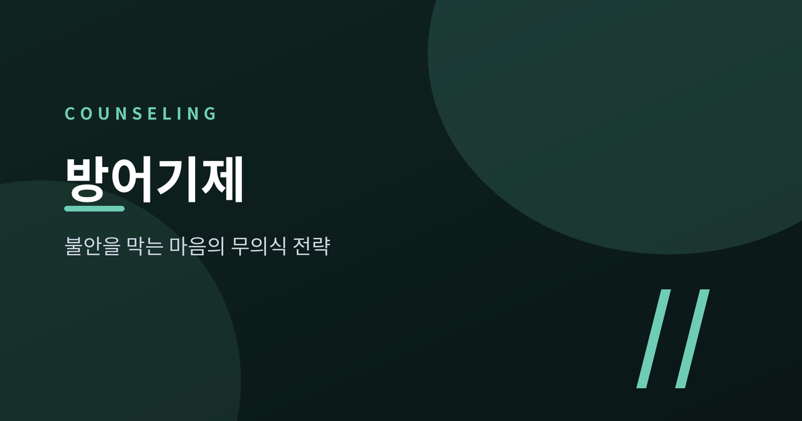
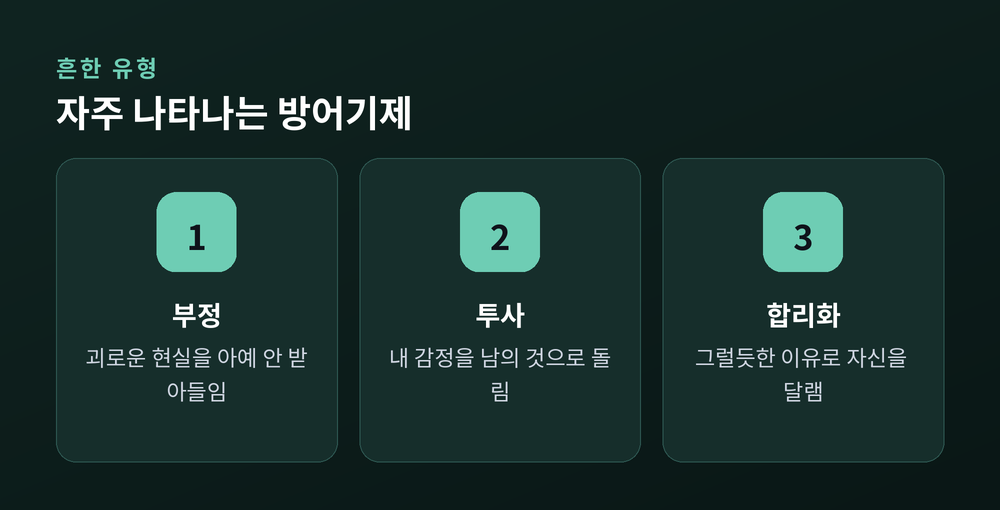
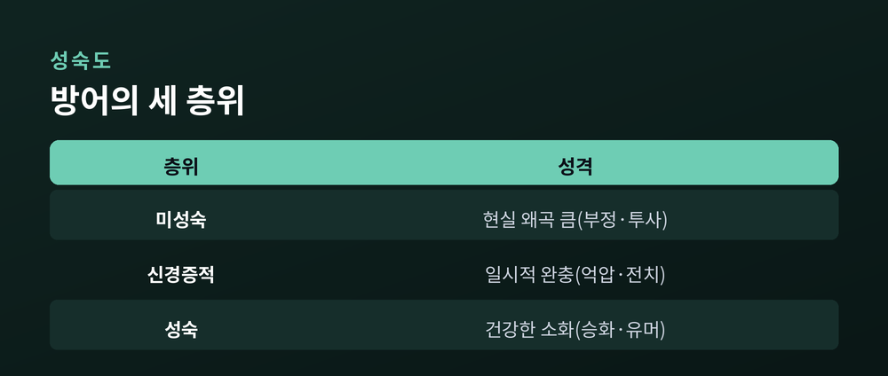
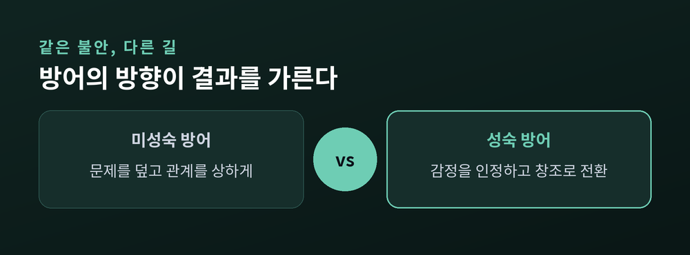
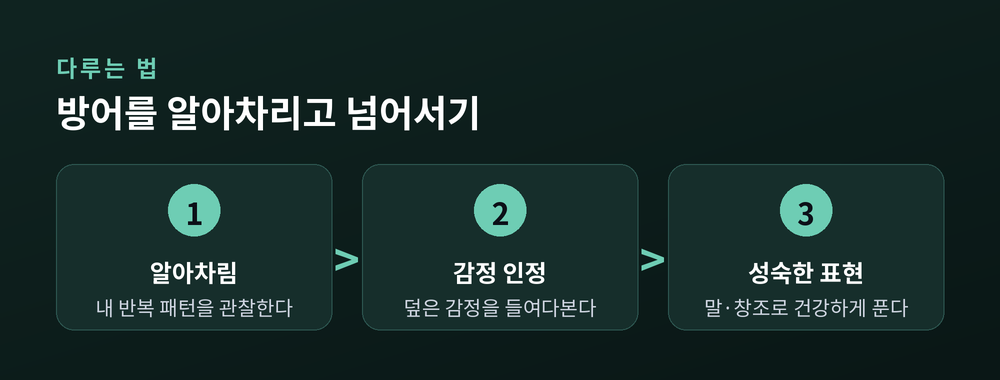

방어기제란 무엇인가 — 불안을 막는 마음의 무의식 전략과 성숙한 대처

오늘은 '방어기제'에 대해 이야기해 보려 합니다.
누군가의 갑작스러운 화, 누군가의 뜬금없는 부정(否定), 누군가의 지나친 친절. 이 모든 것 뒤에는 마음이 불안을 막으려 쓰는 무의식의 전략이 숨어 있을 때가 많습니다.
방어기제가 무엇이고, 어떤 유형이 있으며, 어떻게 하면 좀 더 성숙하게 다룰 수 있는지 정리해 보겠습니다.
방어기제, 정확히 무엇인가
미국심리학회(APA)는 방어기제를 "스트레스와 갈등에서 비롯되는 불안으로부터 자신을 보호하기 위해 개인이 사용하는 반응 패턴"이라고 정의합니다.
정신분석가 안나 프로이트는 조금 더 구체적으로 풀었습니다.
방어기제란 "자아(ego)가 사용하는 무의식적 자원"이라는 것입니다.
프로이트의 구조모델에 따르면 마음은 본능적 욕구를 좇는 원초아, 도덕적 잣대를 세우는 초자아, 그리고 이 둘 사이에서 현실을 중재하는 자아로 이루어져 있습니다.
이 셋의 요구가 동시에 충족되지 않을 때 불안이 생기고, 자아는 그 불안을 줄이기 위해 현실을 조금씩 왜곡하는 전략을 무의식적으로 꺼내 듭니다.
그것이 방어기제입니다.
중요한 점이 하나 있습니다.
방어기제는 병리적 증상이 아닙니다. 정도의 차이만 있을 뿐, 누구나 사용합니다.
다만 특정 기제를 지나치게 자주, 강하게 쓰면 만성적인 불안이나 공포증, 강박으로 이어질 수 있다는 점은 유의할 만합니다.
안나 프로이트가 정리한 무의식의 전략들
안나 프로이트는 1936년 저서 《자아와 방어기제》에서 대표적인 방어기제 10여 가지를 체계화했습니다.
이후 여러 학자들이 목록을 계속 넓혀왔지만, 임상에서 가장 자주 언급되는 것들은 대략 이렇습니다.
부정(否定)은 불편한 사실 자체를 인식 밖으로 밀어내는 것입니다.
건강 이상 신호를 무시하고 병원에 가지 않거나, 관계에 문제가 있다는 명백한 신호 앞에서도 "괜찮다"고 되뇌는 경우가 그렇습니다.
억압은 괴로운 기억이나 충동을 무의식 아래로 눌러버리는 것입니다.
안나 프로이트는 이를 "동기화된 망각"이라 불렀습니다.
억압된 내용은 사라지지 않고, 꿈이나 설명되지 않는 불안으로 우회해 드러나곤 합니다.
투사는 내가 받아들이기 힘든 감정을 남의 것으로 돌리는 것입니다.
스스로의 불안정함을 인정하지 못하는 사람이 오히려 주변 사람들을 "예민하고 적대적"이라 여기는 식입니다.
전치는 감정, 특히 분노를 원래 대상이 아닌 더 안전한 대상으로 옮기는 것입니다.
직장에서 쌓인 스트레스를 집에 와서 가족에게 풀어버리는 경우를 떠올리면 이해가 쉽습니다.
합리화는 그럴듯하지만 왜곡된 논리로 자신을 정당화하는 것이고, 반동형성은 실제 감정과 정반대로 행동하는 것입니다.
안나 프로이트는 반동형성을 "정반대로 믿기"라 표현했습니다.
좋아하는 사람을 오히려 짓궂게 대하는 경우가 대표적입니다.
승화는 조금 다릅니다.
받아들이기 힘든 충동을 파괴적인 방식이 아니라 예술이나 운동 같은 건설적인 활동으로 옮기는 것으로, 뒤에서 다룰 '성숙한 방어'의 대표 격입니다.

방어기제에도 성숙도가 있다
모든 방어기제가 같은 무게를 지니는 것은 아닙니다.
하버드의 정신과 의사 조지 베일런트(George Vaillant)는 수십 년에 걸친 성인 발달 종단연구를 통해, 방어기제를 성숙도에 따라 네 단계로 나누었습니다.
가장 아래에는 현실과 비현실의 경계마저 흐려지는 정신증적 방어가 있습니다.
그 위에는 행동화나 해리, 투사 같은 미성숙한 방어가 자리합니다.
세 번째는 전치나 억압, 반동형성처럼 위협적인 감정을 의식 밖에 묶어두는 신경증적 방어입니다.
그리고 가장 위, 성숙한 방어에는 승화·억제·예측·이타주의·유머가 있습니다.
베일런트의 연구가 보여준 것은 단순합니다.
유머나 이타주의, 미리 준비하는 습관처럼 성숙한 방어를 자주 쓰는 사람일수록 더 건강하고 만족스러운 삶을 살았습니다.
부정이나 투사, 해리 같은 미성숙한 방어에 기대는 사람일수록 그 반대였습니다.
흥미로운 점은, 방어기제가 고정되어 있지 않다는 것입니다.
베일런트는 청소년기의 충동적인 행동화가 시간이 지나며 반동형성을 거쳐, 결국 이타주의 같은 성숙한 방어로 발전할 수 있다고 보았습니다.
예전엔 감정을 억누르거나 남 탓으로 돌렸던 사람이, 지금은 그 감정을 인정하고 다른 방식으로 풀어내게 되는 것입니다.

미성숙한 방어와 성숙한 방어, 무엇이 다른가
같은 불안 앞에서도 사람마다 반응은 갈립니다.
미성숙한 방어는 대체로 문제를 덮는 쪽을 택합니다.
당장은 편하지만, 시간이 지날수록 관계를 상하게 하고 같은 갈등을 반복하게 만듭니다.
부정은 병을 키우고, 투사는 신뢰를 갉아먹고, 전치는 애꿎은 사람에게 상처를 남깁니다.
성숙한 방어는 다릅니다.
감정을 없는 셈 치지 않고, 있는 그대로 인정한 뒤 건설적인 방향으로 옮겨 놓습니다.
화가 난 감정을 억누르는 대신 달리기로 풀어내거나, 상실의 아픔을 글이나 그림으로 표현하는 식입니다.
물론 성숙한 방어라고 해서 늘 완벽한 것은 아닙니다. 유머로 넘기는 것이 때로는 진짜 감정을 마주하는 일을 미루는 수단이 되기도 합니다.
방어는 어디까지나 방어일 뿐, 문제 자체를 없애주지는 않는다는 한계는 분명히 있습니다.

방어기제를 알아차리고 넘어서는 법
방어기제를 없애는 것이 목표는 아닙니다. 그것은 가능하지도 않습니다.
대신 자신이 어떤 방어를 자주 쓰는지 알아차리는 것에서 출발할 수 있습니다.
먼저 반복되는 패턴을 관찰하는 일이 필요합니다.
비슷한 상황에서 매번 화를 내거나, 매번 남 탓을 하거나, 매번 아무렇지 않은 척한다면 그 뒤에 어떤 감정이 숨어 있는지 돌아볼 만합니다.
다음은 덮어둔 감정을 있는 그대로 인정하는 단계입니다.
불안하다면 불안하다고, 서운하다면 서운하다고 스스로에게 먼저 말해주는 것입니다.
부정하거나 밀어내지 않는 것만으로도 방어의 강도는 한결 누그러집니다.
마지막은 그 감정을 건강하게 표현하는 단계입니다.
말로 풀어내든, 글이나 운동, 창조적인 활동으로 옮기든, 감정에 방향을 만들어주는 일입니다.
이것이 곧 승화이자, 성숙한 방어로 나아가는 길입니다.

혼자서 이 과정을 반복해도 패턴이 잘 바뀌지 않거나, 특정 감정만 마주하면 유독 힘들어지는 경우도 있습니다.
그런 어려움이 계속된다면 전문 상담을 받아보시길 권합니다.
훈련된 상담자와 함께라면, 스스로는 보기 어려웠던 패턴을 더 안전하게 들여다볼 수 있습니다.
정리하면 이렇습니다.
방어기제는 마음이 불안으로부터 스스로를 지키기 위해 쓰는 오래된 전략입니다.
문제는 방어기제를 쓰느냐 마느냐가 아니라, 어떤 방어기제를 쓰느냐입니다.
"불안을 없애려 하기보다, 불안을 다루는 방식을 바꾸는 것" — 이것이 방어기제를 이해하는 일의 핵심입니다.
지금 당신이 반복하고 있는 그 패턴은, 어쩌면 예전의 당신을 지켜준 고마운 전략이었을 것입니다.
이제는 그 전략을 조금 더 성숙한 방식으로 바꿔볼 때가 아닌가, 그렇게 묻고 싶습니다.
이 글은 일반적인 정보를 담은 것으로, 특정인의 상태를 진단하지 않으며 전문적인 상담이나 진단, 치료를 대체하지 않습니다.
반복되는 어려움이 지속된다면 가까운 전문 상담 기관을 통해 도움을 받아보시길 권합니다.